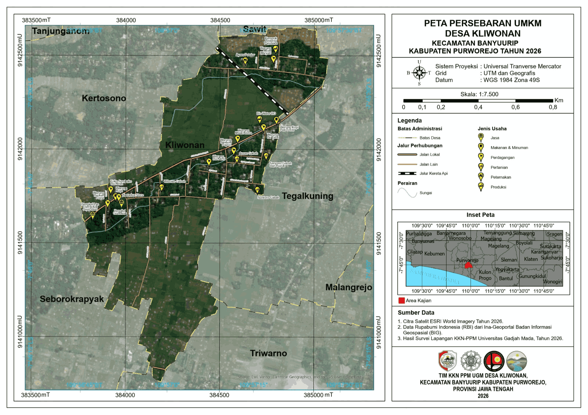
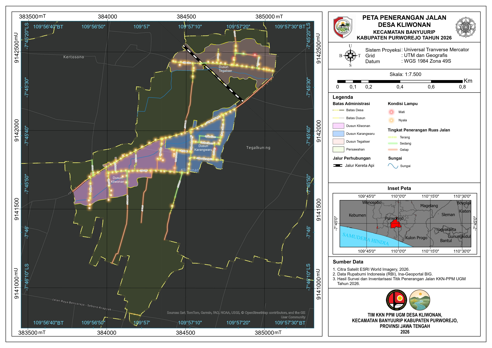
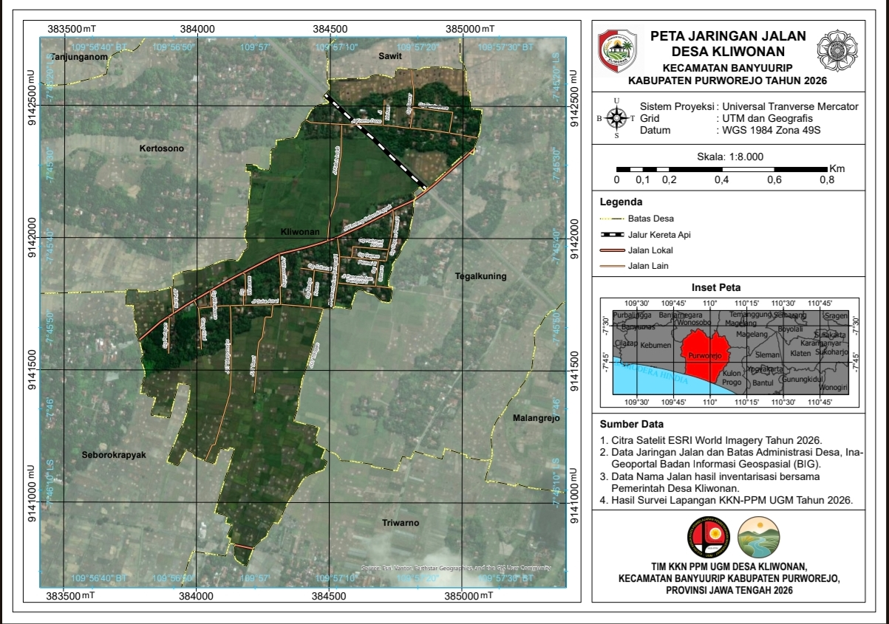

ADMINISTRASI
Peta Administrasi Desa Kliwonan
Menampilkan batas wilayah dan informasi administrasi Desa Kliwonan.
Kumpulan peta tematik Desa Kliwonan yang telah disusun untuk memberikan informasi mengenai wilayah, fasilitas, potensi, dan kondisi desa.
Pilih peta untuk melihat tampilan dalam ukuran yang lebih besar.
Menampilkan batas wilayah dan informasi administrasi Desa Kliwonan.

Menampilkan persebaran usaha dan potensi ekonomi masyarakat desa.

Menampilkan persebaran titik penerangan jalan di Desa Kliwonan.

Informasi nama dan jaringan jalan yang terdapat di Desa Kliwonan.

Informasi lokasi penempatan fasilitas tempat sampah di Desa Kliwonan.
Informasi peta Desa Kliwonan.